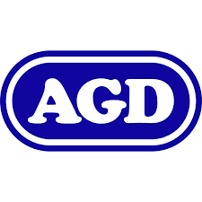
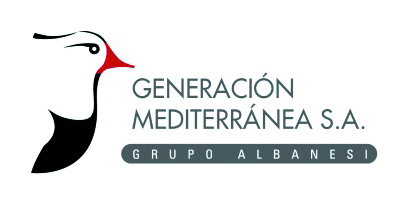

Resumen de trayectoria

Ingeniero de Procesos
Aristeo Ingeniería | Sep 2024 - Actualidad
En Aristeo Ingeniería me desempeño en el desarrollo y ejecución de proyectos para la industria de grasas y aceites, combinando experiencia técnica en procesos industriales con la gestión integral de servicios. Este rol me permitió no solo profundizar en el ámbito de la ingeniería de procesos, sino también abrirme a una faceta comercial, desarrollando habilidades de contacto directo con clientes y de presentación de servicios, lo que amplió significativamente mi perfil profesional.

Supervisor de Proceso de Refinería
Aceitera General Deheza | Noviembre 2016 a Septiembre 2024
En AGD desempeñé el rol de Supervisor de Proceso de Refinería, donde coordiné y supervisé las operaciones de refinería, asegurando el cumplimiento de los estándares de seguridad y calidad. Esta experiencia me permitió desarrollar habilidades en gestión de equipos, optimización de procesos y toma de decisiones críticas en entornos industriales dinámicos.
Asistente de Operaciones de Refinería
Aceitera General Deheza | Diciembre 2013 a Noviembre 2016
Formé parte del equipo de proyectos encargado de la instalación y puesta en marcha de una nueva línea de producción de aceite refinado. Mi participación abarcó tanto la coordinación con proveedores como la generación de metodologías y capacitaciones para asegurar la eficiencia y sostenibilidad operativa del proyecto.

Supervisión de montaje - Operación en panel de control
Promaiz | Julio 2013 - Diciembre 2013
Participé en la puesta en marcha de una planta de bioetanol, supervisando el montaje en campo y acompañando la transición hacia la operación productiva. Posteriormente, asumí la gestión de la producción en turnos rotativos, garantizando la continuidad operativa y el cumplimiento del plan de producción.
Ingeniero Junior - Programa de Formación para Jóvenes Profesionales
Aceitera General Deheza S.A | Abril 2012 a Julio 2013
A través de un programa de formación para jóvenes profesionales, se llevó adelante un entrenamiento teórico/práctico para desarrollar competencias en los diferentes sectores de la empresa. Se completó el desarrollo y participación en proyectos individuales y grupales, según necesidades del sector formador.

Pasante - Central Termoeléctrica Generación Mediterránea Modesto Maranzana
Grupo Albanesi| Abril 2011 a Junio 2011
Contrato de prácticas profesionales, donde se desarrollaron principalmente tareas relacionadas al tratamiento de agua para utilización en la caldera.